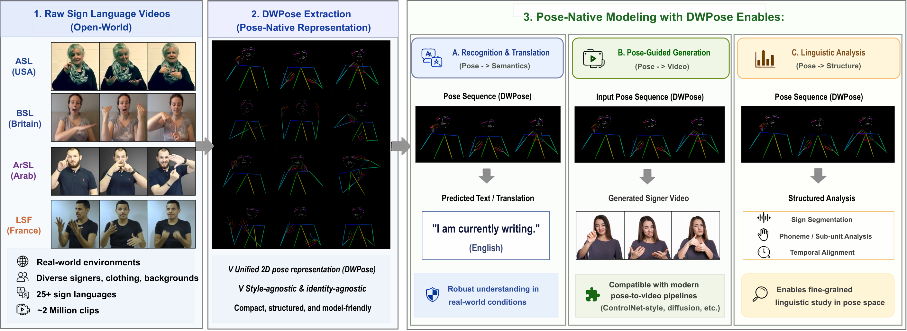

SignVerse-2M
[Organization]
Title
Overview
Teaser
Abstract
Dataset
Pipeline
Pose Schema
Compatibility
Summary
Why Pose-Native
Contributions
Other
BibTeX
Make sign language research practical, affordable, and scalable!
SignVerse-2M: A Two-Million-Clip Pose-Native Universe of 55+ Sign Languages
Sen Fang
1
,
Hongbin Zhong
2
,
Yanxin Zhang
3
,
Dimitris N. Metaxas
1
1
Rutgers University,
2
Georgia Institute of Technology,
3
NVIDIA
Paper
Data Files
Dataset README
Micro Dataset
Results Preview

Figure:
SignVerse-2M reorganizes large-scale public sign language videos into a unified DWPose-native interface that is directly compatible with modern pose-driven generation pipelines.
2 Million
pose-native clips
55+
sign languages
open-world
source videos
24 FPS
DWPose extraction